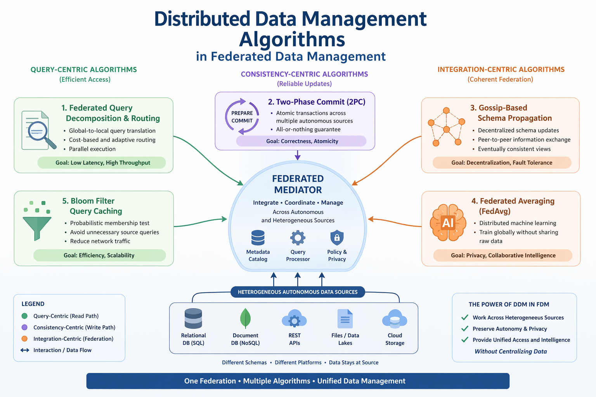

Federated Data Management 2.0
Building upon the foundational principles of Federated Data Management, this report introduces Federated Learning (FL) applied to water management ecosystems. FL enables multiple decentralized edge devices or servers to build a common, robust machine learning model without sharing data.
AQUA-Fed is a domain-specific architecture designed to orchestrate analytics across heterogeneous, geographically distributed remote sensors computing water parameters collaboratively.

AQUA-Fed strictly isolates raw sensor data on local nodes, transmitting only model weight updates and gradient differentials to the global orchestrator.
We analyze the mathematical convergence properties of the FedAvg algorithm operating in non-IID data environments.
| Mechanism | Traditional ML | FedAvg |
|---|---|---|
| Data Modality | Centralized Repository | Highly Distributed / Siloed |
| Bandwidth Bottleneck | High (Raw Data Transfer) | Low (Model Weights Only) |
| Privacy Assurance | Weak | Strong (via Differential Privacy) |
To view the full equations, methodology, and LaTeX diagrams for AQUA-Fed Architecture, please launch the formal compiled documentation.
Download FDM 2.0 Document